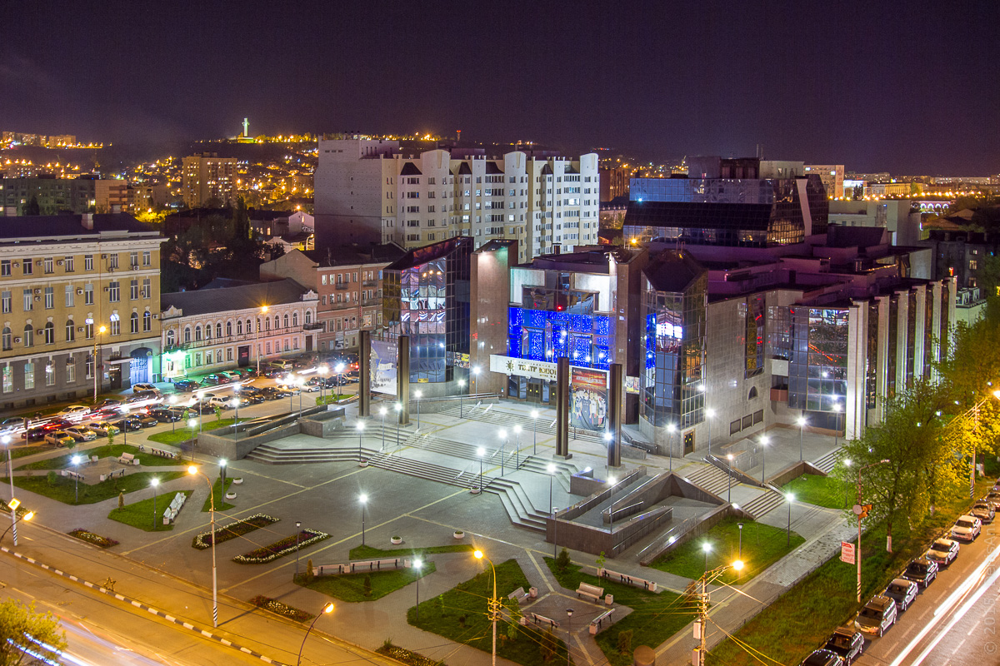

Город саратов
Саратов – крупный город и речной порт на юго-востоке России, расположенный на высоком правом берегу Волги. Тут находится администрация Саратовской области и руководство муниципальной агломерации, в которую включены близлежащие населенные пункты, а также город Энгельс, построенный на противоположном берегу Волги. В «Большом Саратове» проживают более 1,2 миллиона человек. Туристам будет интересно осмотреть исторический центр города с его старинной застройкой, посетить любопытные музеи или отдохнуть на одной из многочисленных турбаз, расположенных в окрестностях Саратова, на берегах Волги и ее притоков.
